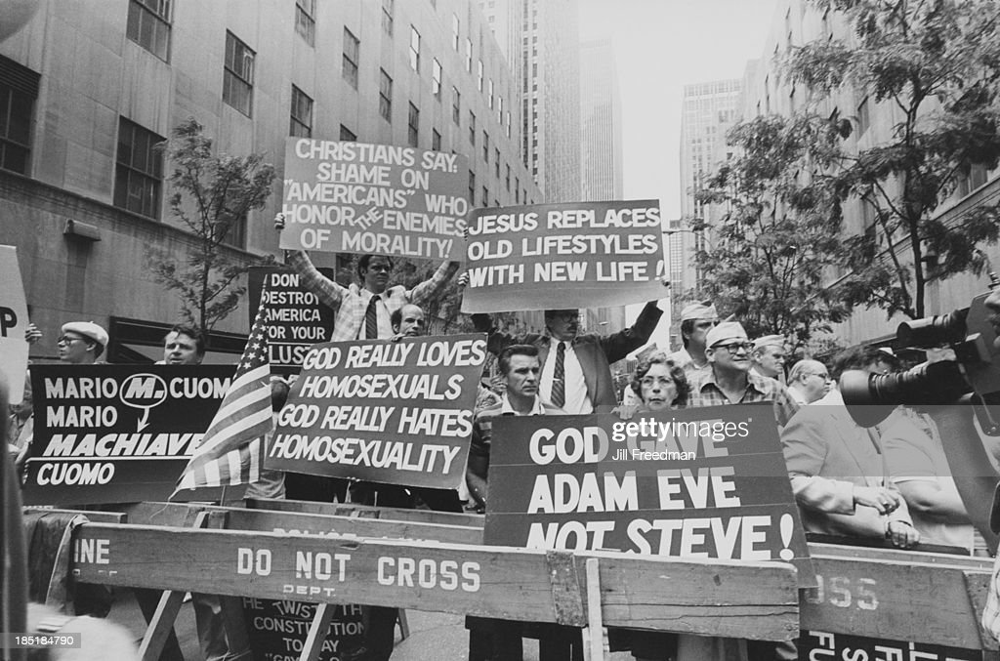

Unfortunately, your decision to show your sexuality has put you in a difficult position. The 1980s were a time of great turmoil for the gay community, and there was a tremendous amount of discrimination and stigma against homosexuals in society. With the rise of AIDS cases during this time, the disease was often referred to as the "gay plague," which only added to the bigotry and hatred directed towards the gay community.
According to NBC News, "Reporting in the press became more and more homophobic, especially when the emergence of HIV and AIDS appeared. Most of the media demonized the LGBT community, saying that it was God's punishment for homosexuals, and they got HIV or AIDS to 'pay for their sins.' The CDC initially referred to AIDS as 'GRID, Gay Related Immune Deficiency Disorder.'"
As a result of your decision, you may find yourself facing discrimination, bigotry, and even violence from those who don't understand or accept your lifestyle. You may be ostracized by your family and friends, and you may find it difficult to find acceptance in society. This can be an incredibly isolating and painful experience, and it may take a toll on your mental health and well-being.
Despite these challenges, it's important to remember that you are not alone. There are countless others who have faced similar struggles and have found ways to overcome them. It may take time and courage, but you can find acceptance and support within the gay community and beyond. Remember that you are worthy of love and respect, and that you deserve to live your life authentically and without fear.
 Continue